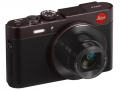
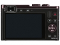
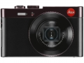
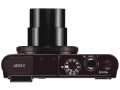
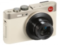
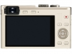
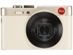
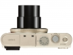

器材库 > 不可换镜头数码相机 > Leica C

规格总览
发布日期
2013-09-09
厂家推荐价格
699.00 （美元）
防水
否
影像规格
影像传感器
MOS
影像传感器尺寸
1/1.7英寸
总像素
1280万
有效像素
1210万
影像处理器
高性能维纳斯处理引擎
静态图像尺寸
4:3画幅 4000 x 30003；3:2画幅 4000 x 2672；16:9画幅 4000 x 2248；1:1画幅 2992 x 2992
静态图像格式
JPEG, RAW, MPO
画幅比
3:2, 4:3, 16:9, 1:1
短片尺寸
1920 x 1080分辨率60i；1280×720分辨率60P
短片格式
AVCHD, MP4
短片音效
光学防抖
镜头和对焦
镜头结构
10片/8组
非球面镜片
4片
低/超低色散镜片
1片
焦距
6.0mm-42.8mm
等效35mm画幅焦距
28mm-200mm
最大光圈
f/2.0-f/8.0
光学变焦
7.1倍
最近对焦距离
广角：50cm, 微距3cm
自动对焦系统
对比检测
对焦模式
多点
手动对焦
支持
曝光控制
测光模式
中央重点测光, 多分区评价测光, 点测光
曝光模式
P（程序自动曝光）, A（光圈优先自动曝光）, S（快门速度优先自动曝光）, M（手动测光曝光）
快门速度
60-1/4000
曝光补偿
±2EV以1/3EV级调整
ISO感光度
80, 200, 400, 800, 1600, 3200, 6400, 自动, 可扩展至12800
白平衡
日光, 白炽灯, 阴天, 阴影, 白色设置, 自动, 手动白平衡
自拍
10秒
连拍
10张/秒，最多12张
闪光灯
内置闪光灯
固定
闪光模式
自动, 慢速同步, 减轻/消除红眼, 强制闪光, 禁止闪光, 红眼修复
闪光涵盖范围
0.6 - 7.0米（广角/ ISO自动），0.8 - 2.3米（望远/ ISO自动）
取景规格
取景器
电子取景器
取景器尺寸
0.2英寸
取景器像素
20万
LCD类型
TFT LCD
LCD尺寸
3.0英寸
LCD像素
92万
视野率
100%
文件输入/输出
内置存储容量
87 MB
存储卡
SD/SDHC, SDXC
数据接口
USB
视频/音频接口
HDMI Mini 输出
无线功能
Wi-Fi, NFC
电源
电池
锂离子电池
续航能力
250张图片
外观
颜色
棕/褐色, 香槟金
尺寸
103×63×28mm
重量
173g
该产品暂无存档的网友点评
产品图 / 样片






